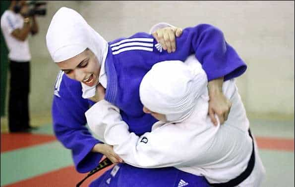
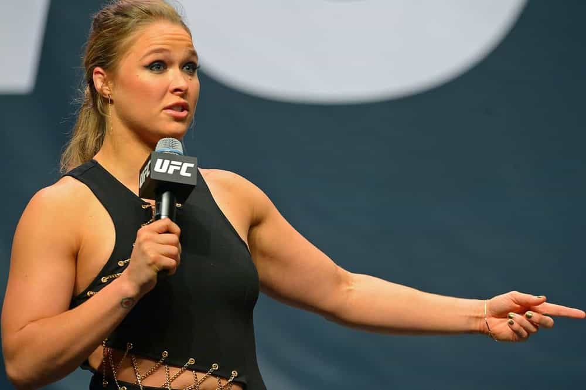
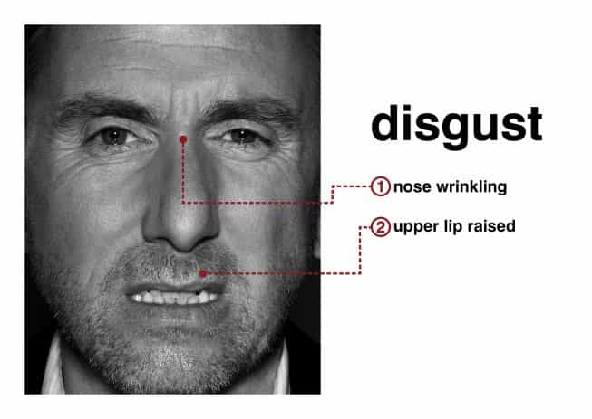
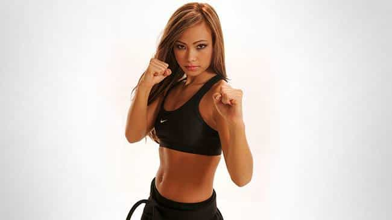
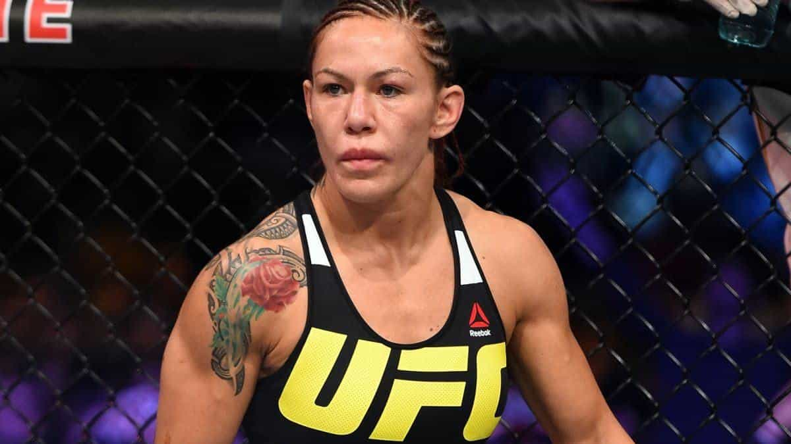

< < < Back
Professional Female Fighting Is Grotesque And Must Be Banned – Return Of Kings
Why do female fighters still exists? That’s what I asked myself after clicking on the below video that appeared in Youtube’s invasive “Recommended for you” list. I was surprised that the fragile cucks at VICE have any interest in a masculine environment.
Why are butch dykes trading punches still a thing? Their level is abysmal and the female UFC’s ratings are a fraction of what the male equivalent creates. Then it hit me. It is because men softened up and allowed it.
Those women are severely damaged. They are foul in shape and soul. They talk, walk like men and spit. But their attitude is uglier with their trash talking, hypersexual image or regular promotion of homosexuality.
How did it happen

It is a recent phenomenon. Female Olympic categories were introduced for wrestling in 2004, judo in 1992 and boxing in 2012. Female MMA only appeared in the late 2000s. No one wanted this before.
Men of all cultures have always encouraged martial arts, an essential part of their identity, but no society considered women able to fight unarmed as a positive thing. Women being celebrated for fighting now is symptomatic of a diseased society and the men finding it attractive suffer from a malfunctioning, feminised sexuality.
Now that women imposed themselves in that male universe, modern weak men accept it to give special treatment for women to fit in. Examples include allowing them to wear Islamic veils while fighting or letting a woman be injected with testosterone to “become” a man compete in wrestling.

The teachers that let the doors of their gym open for women are also at fault for this.
An ugly trend that reflects our times
The promoters of this vile circus want it popularised to make a quick buck while it helps deconstruct femininity. Young girls start to think that it is normal to get their face kicked in and like monkeys, will reproduce what they have seen. There must also be a demand from beta males that have emasculating fantasies about modern Amazons choking them into erotic asphyxiation.
Men don’t watch women in the UFC for the physical prowess or the technique. Those who watch it want to see girls in little clothing to perform skills they lack.
A woman who fights is void of female attributes. Grace, deference, feminine shapes… it’s all gone. I find interesting that female martial arts are forced on our screens in the same time frame as “E-sports” which have to be the most beta activity to date since complimenting pornstars on Instagram.

Ronda Rousey spearheaded that degeneracy, because contrary to the others, her facial features were normal and she wore heels sometimes. But the feminine attire does not slow her down when she needs to commit factual domestic abuse and admit it without being charged.
The physical and cultural toll

My face when I see girls trying to fight like men.
That case of blatant penis envy does not serve anyone. Fighting produces testosterone so women become like men when they fight. They tend to have a thin frame but the muscular aspect quickly makes it hideous. Their breasts shrink as well as their healthy fat levels and their jaws become even more defined and masculine. They become nasty and insolent.
Contrary to what O.J. Simpson might tell you, women are not biologically designed to receive copious amounts of punches. The case has not been studied yet but with women being weaker, there is little doubt that the repeated impacts on their fragile skull promise to create advanced cases of head traumas such as severe neuronal loss, concussions or chronic traumatic encephalopathy.

CTE caused by repeated hits to the skull. Impacts in rotation, common in MMA and boxing, are the most dangerous.
Testosterone also makes women more sexually promiscuous, a major factor in cultural decline. Professional and amateur female martial artists tend to display a high number of slut tells (their tattoos, always near erogenous zones, is one of the most obvious).
I can remember three girls that I bedded and who were martial artists, from different countries and backgrounds. They were all selfish, raging sluts with an enormous problem of attitude quickly leading to their trial period ending abruptly once they serviced me.
Why it matters
The detractors will be quick to rush to the case of Paige VanZant or Michelle Waterson when I declare that an overwhelming majority of fighting women are ugly. I don’t want to fall into a “pointy elbows would not bang” perspective but those two reasonably bangable women are the minuscule emerged part of the iceberg. The rest look like cauliflower-eared foul-mouthed teenage boys.

What they sell you (Michelle Waterson)

How it really is (Cris Cyborg)
I am not against women in sports. On the contrary, I am favourable to them doing soft exercise like running, gymnastics or attend segregated gyms in moderation. But fighting raises their testosterone (like many other competitive sports) and turns them into men with long hair (when they don’t shave it off). They should not fight.
The biological realities are there. Women are weaker and not good fighters, who can’t even make it worth watching. But some lost souls believing in the tankkk grrrl myth started to speculate that some UFC female fighters could last more than a few seconds against a man.
The mental gymnastics reach a new level. To think of a comparison, you could even take a skilled boxer but grappling beginner like Vasyl Lomachenko (130 lbs) and make him fight Ronda Rousey (same weight) who can also use her kicks and grappling and the man would still win without breaking a sweat. Just observe the sheer speed and impact force and compare that to Rousey’s love taps.
Problem is more women sign up at dojos, influenced by that nonsense and the number of high-testosterone ugly masculine women grows, something that the West clearly does not need.
Comment inverser la tendance?
This all can be stopped if men fight more and apply the rules to become more masculine on a large scale while morally punishing women who take part in any form of physical confrontation. These measures should naturally restore the balance. Also, telling them that they hit like girls always works.
Read More: HBO’s “Girls” Heralds The Cultural Decline Of American Women


{kind=link}